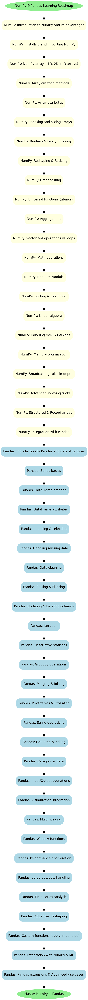

Pandas & NumPy Resources
Roadmap

YouTube Tutorials


Certification Courses
Juno School: Master Pandas in Python (Free Certificate)
Great Learning: Introduction to Pandas 2.0 (Free Certificate)
Coursera: Data Analysis with Pandas & Python
Real Python: Pandas Certificate
Great Learning: NumPy Tutorial (Free Certificate)
Simplilearn: Learn NumPy Basics (Free Certificate)
Alison: Introduction to NumPy (Free Certificate)
Website Links
Interview Questions
- What is NumPy and why is it important for scientific computing in Python?
- Explain the difference between lists and NumPy arrays.
- How do you read and write CSV files using Pandas?
- What are DataFrames and Series in Pandas?
- How do you handle missing data in Pandas?
- Explain broadcasting in NumPy.
- How do you merge and join datasets using Pandas?
- Describe the use of groupby in Pandas.
- How can you improve performance using NumPy vectorization?
- What are some common aggregation functions in Pandas?